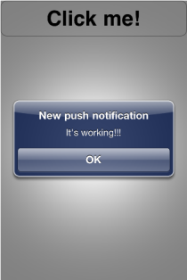

Push notifications are a useful way to inform users of external events, such as game updates or mail deliveries. In this tutorial we will take you through the steps of creating a simple application that uses the MoSync C++ Notification Library to register and receive push notifications.
From MoSync 3.1.1, the Notification API can use the new GCM service. The C2DM service is deprecated, but is still available only for already registered users. The only needed change for the client side now will be supplying the projectId param instead of the senderId when calling
NotificationManager::registerPushNotification().
Note 1: to complete this tutorial you will need a a server-side application and a provisioning profile (for iOS). To create a server side application follow for example mobiForge's tutorial for iOS and the GCM Server guide for Android.
Note 2:: for Android apps, the push notification message sent to GCM must be put inside a JSON object having the key "payload". Read the notes regarding Android for more info.
Push notifications are messages that are sent by external applications to the device. They allow the user to be notified without needing to open an application. When the device receives a push notification a sound can be played, an application icon badged, or a message can appear on the screen. When the user receives a push notification message, they can launch the appropriate application and see the change or they can choose to ignore the notification.
Push notifications originate on a remote server—the application provider—and are pushed to applications on devices via a service:
The MoSync Application Framework provides functions for handling notifications (both push and local) at different layers in your code:
In this tutorial we will take a look at implementing push notifications in the C/C++ layers.
Let's create a simple application that sends a push notification, via the application provider, to the device. (The complete listing of this application is given at the end of this tutorial.)
Start by creating a new NativeUI project:
Now we are ready to start coding our application.
Open the main.cpp file in the project, and add the #include directives for the push notification files and the Notification namespace:
#include <MAUtil/Moblet.h> #include <IX_WIDGET.h> #include <Notification/NotificationManager.h> #include <Notification/PushNotification.h> #include <Notification/PushNotificationListener.h> using namespace MAUtil; using namespace Notification;
Add the push notification listener to the NativeUIMoblet class:
/**
* Moblet to be used as a template for a Native UI application.
*/
class NativeUIMoblet : public Moblet,
public PushNotificationListener
{
Inside the Moblet constructor, register the application for receiving push notification events and attach the listener to the service:
NativeUIMoblet() :
mButtonClickCount(0)
{
createUI();
NotificationManager::getInstance()->registerPushNotification(
PUSH_NOTIFICATION_TYPE_BADGE |
PUSH_NOTIFICATION_TYPE_ALERT |
PUSH_NOTIFICATION_TYPE_SOUND,
senderID);
NotificationManager::getInstance()->addPushNotificationListener(this);
}
On Android, if registration was not successful due to SERVICE_NOT_AVAILABLE, a registration retry is automatically triggered after 3 seconds.
There are some differences between platforms:
Now let’s implement listener’s methods:
//For Android and iOS platforms:
virtual void didReceivePushNotification(PushNotification& pushNotification)
{
maMessageBox("New push notification", pushNotification.getMessage()->c_str());
}
virtual void didApplicationRegistered(String& token)
{
maMessageBox("Application has registered", token.c_str());
}
virtual void didFaildToRegister(String& error)
{
maMessageBox("Application cannot register", error.c_str());
}
//For the Android platform only (on iOS you will never get the callback):
virtual void didApplicationUnregister()
{
maMessageBox("Application has unregistered","");
}
In the MoSync IDE, select the target device profile and build the application. MoSync will produce an Xcode project and packages for Android.
Before you build your application for the iOS platform you need to modify the bundle identifier in the Xcode project with your provisioning profile.
First you’ll need to get an application ID from the Apple Developer Center:
Now add the App ID to your project:
First, check that you have followed the prerequisites for running an application.
Transfer the application to a device and run it. If the application has been correctly registered for push notifications, a message box will pop up with the device token (on iOS) or the application ID on Android.
Go to your server-side application and send a push notification for this device token (on iOS) or application ID (on Android). Your application will now receive the notification:

{
"registration_ids" : ["APA91bHun4MxP5egoKMwt2KZFBaFUH-1RYqx..."],
"data" : {
"payload" : {
"test" : "everything in the payload object will be received by MoSync's Android runtime",
"msg" : "This key-value pair will also be received."
}
},
}
The example is based on the information given under Request format in the GCM Architectural Overview. This page can also be consulted regarding how to test sending push notifications to your Android app using e.g. a REST client.
If you are using the deprecated C2DM service, see the Android Cloud to Device Messaging Framework guide. Regarding senderID see the Registering for C2DM section. For information regarding how to send messages to the application, see the section How the Application Server Sends Messages.
The senderID parameter should be used in the call to registerPushNotification. The senderID is used in to identify an Android application that is permitted to send messages to the device. This ID is typically role-based rather than being a personal account—- for example, my-app@gmail.com..
When the mobile application wants to use C2DM it first registers with Google and gets a unique registration ID, which is different than senderID. The registration ID is tied to a particular application running on a particular device. You must send that ID to your servers and store it so you can communicate with the user.
It is recommended that the application registers with Google C2DM only the first time it’s launched, and then stores the registration ID for later use. Note however that Google may periodically refresh the registration ID, so you should design your application with the understanding that the registration request may be called multiple times. Your application needs to be able to respond accordingly. The registration ID lasts until the application explicitly unregisters itself, or until Google refreshes the registration ID for your application. Uninstalling the application also has the effect of unregistering.
Here is a complete listing of our application:
#include <ma.h>
#include <mavsprintf.h>
#include <MAUtil/Moblet.h>
#include <IX_WIDGET.h>
#include "notification/NotificationManager.h"
#include "notification/PushNotification.h"
#include "notification/PushNotificationListener.h"
using namespace MAUtil;
using Notification::NotificationManager;
using Notification::PushNotification;
using Notification::PushNotificationListener;
#define C2DM_USER_ACCOUNT "yourAccountHere"
/**
* Moblet to be used as a template for a Native UI application.
*/
class NativeUIMoblet : public Moblet,
public PushNotificationListener
{
public:
/**
* The constructor creates the user interface.
*/
NativeUIMoblet() :
mButtonClickCount(0)
{
createUI();
NotificationManager::getInstance()->registerPushNotification(
Notification::PUSH_NOTIFICATION_TYPE_BADGE |
Notification::PUSH_NOTIFICATION_TYPE_ALERT |
Notification::PUSH_NOTIFICATION_TYPE_SOUND,
C2DM_USER_ACCOUNT);
NotificationManager::getInstance()->addPushNotificationListener(this);
}
/**
* Create the user interface.
*/
void createUI()
{
// Create a NativeUI screen that will hold layout and widgets.
MAHandle screen = maWidgetCreate(MAW_SCREEN);
// Error handling for devices that do not support NativeUI.
if (-1 == screen)
{
maPanic(0, "NativeUI is only available on Android and iOS.");
}
// Create a layout object.
MAHandle layout = maWidgetCreate(MAW_VERTICAL_LAYOUT);
widgetSetPropertyInt(
layout,
MAW_WIDGET_WIDTH,
MAW_CONSTANT_FILL_AVAILABLE_SPACE);
widgetSetPropertyInt(
layout,
MAW_WIDGET_HEIGHT,
MAW_CONSTANT_FILL_AVAILABLE_SPACE);
maWidgetSetProperty(
layout,
MAW_WIDGET_BACKGROUND_COLOR,
"0xFFFFFF");
maWidgetAddChild(screen, layout);
// Create a button.
mButton = maWidgetCreate(MAW_BUTTON);
widgetSetPropertyInt(
mButton,
MAW_WIDGET_WIDTH,
MAW_CONSTANT_FILL_AVAILABLE_SPACE);
widgetSetPropertyInt(
mButton,
MAW_WIDGET_HEIGHT,
MAW_CONSTANT_WRAP_CONTENT);
maWidgetSetProperty(
mButton,
MAW_BUTTON_TEXT_VERTICAL_ALIGNMENT,
MAW_ALIGNMENT_CENTER);
maWidgetSetProperty(
mButton,
MAW_BUTTON_TEXT_HORIZONTAL_ALIGNMENT,
MAW_ALIGNMENT_CENTER);
maWidgetSetProperty(
mButton,
MAW_BUTTON_TEXT,
"Click me!");
maWidgetSetProperty(
mButton,
MAW_BUTTON_FONT_COLOR,
"0x000000");
maWidgetSetProperty(
mButton,
MAW_BUTTON_FONT_SIZE,
"36");
maWidgetAddChild(layout, mButton);
// Show the screen.
maWidgetScreenShow(screen);
// Make the Moblet listen to widget events.
Environment::getEnvironment().addCustomEventListener(this);
}
/**
* Called when a key is pressed.
*/
void keyPressEvent(int keyCode, int nativeCode)
{
if (MAK_BACK == keyCode || MAK_0 == keyCode)
{
// Call close to exit the application.
close();
}
}
/**
* Method that implements the custom event listener interface.
* Widget events are sent as custom events.
*/
void customEvent(const MAEvent& event)
{
if (EVENT_TYPE_WIDGET == event.type)
{
// Get the widget event data structure.
MAWidgetEventData* widgetEvent = (MAWidgetEventData*) event.data;
// Has the button been clicked?
if (MAW_EVENT_CLICKED == widgetEvent->eventType &&
mButton == widgetEvent->widgetHandle)
{
++mButtonClickCount;
char buffer[256];
if (1 == mButtonClickCount)
{
sprintf(buffer, "You clicked me once!", mButtonClickCount);
}
else
if (100 == mButtonClickCount)
{
sprintf(buffer, "Wow! 100 times!", mButtonClickCount);
}
else
{
sprintf(buffer, "You clicked me %i times!", mButtonClickCount);
}
maWidgetSetProperty(mButton, "text", buffer);
}
}
}
/**
* Helper method for setting a widget property integer value.
*/
int widgetSetPropertyInt(MAHandle handle, const char *property, int value)
{
char buffer[256];
sprintf(buffer, "%i", value);
maWidgetSetProperty(handle, property, buffer);
}
/**
* Called when the application receives a push notification.
* @param pushNotification The received push notification.
*/
virtual void didReceivePushNotification(
PushNotification& pushNotification)
{
maMessageBox("New push notification", pushNotification.getMessage()->c_str());
}
/**
* Called when application has been registered for push notification.
*/
virtual void didApplicationRegistered(MAUtil::String& token)
{
maMessageBox("Application has registered", token.c_str());
}
/**
* Called if the application did not registered for push notification.
*/
virtual void didFaildToRegister(
const int code,
MAUtil::String& error)
{
maMessageBox("Application cannot register", error.c_str());
}
private:
MAHandle mButton;
int mButtonClickCount;
};
/**
* Main function that is called when the program starts.
*/
extern "C" int MAMain()
{
Moblet::run(new NativeUIMoblet());
return 0;
}